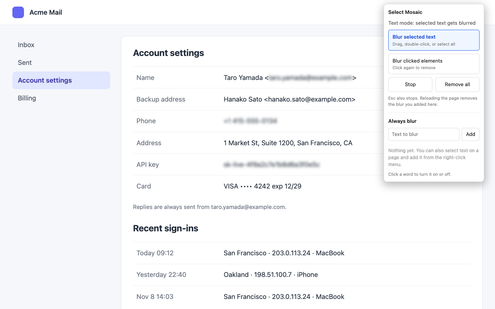
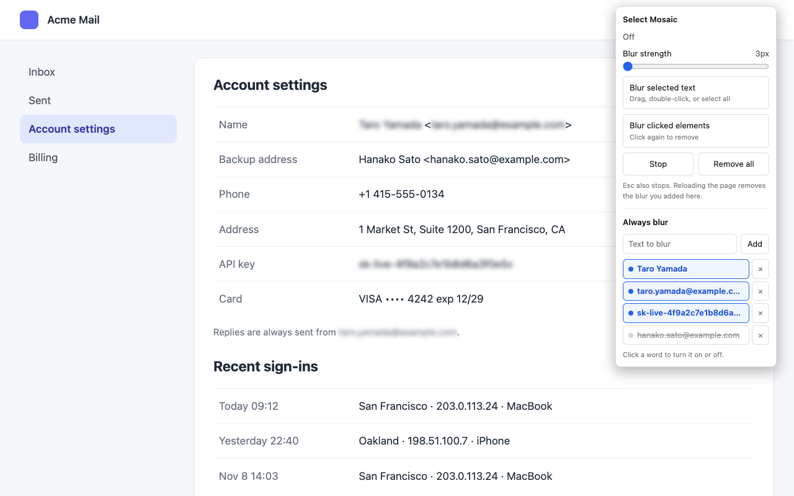
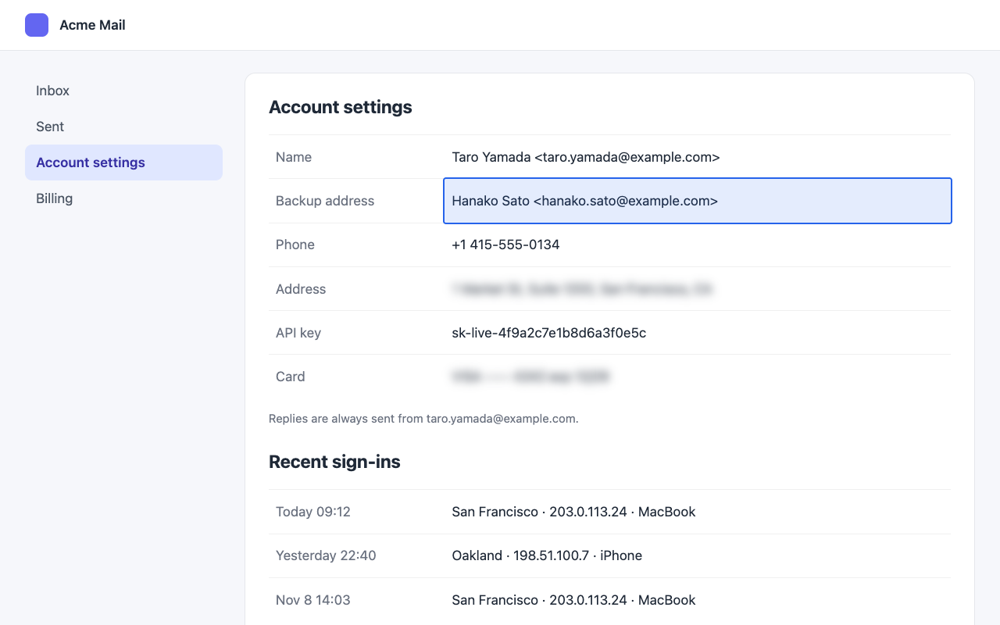
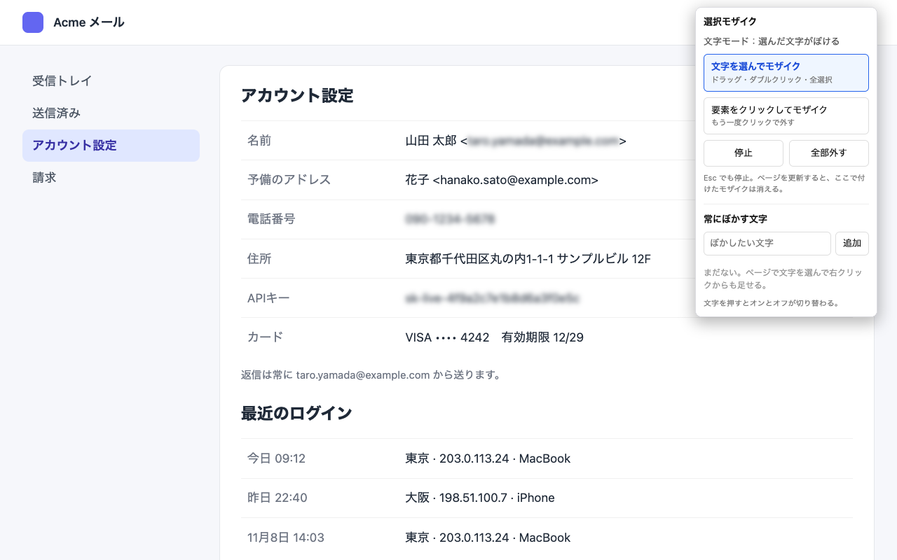
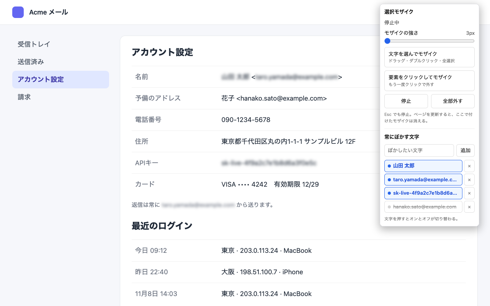
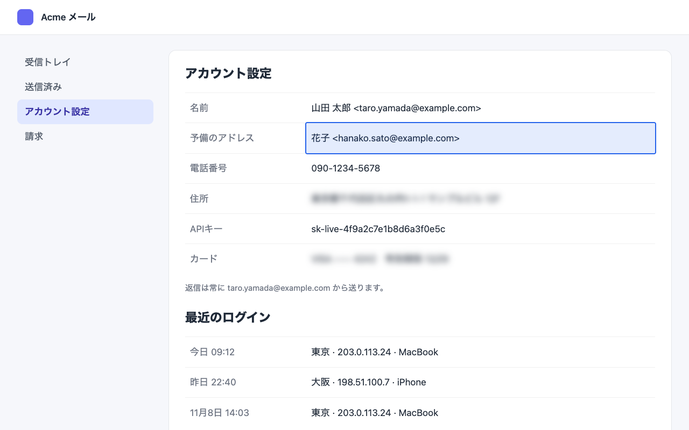
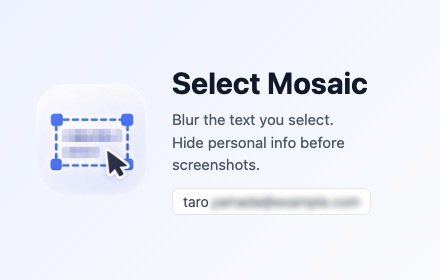
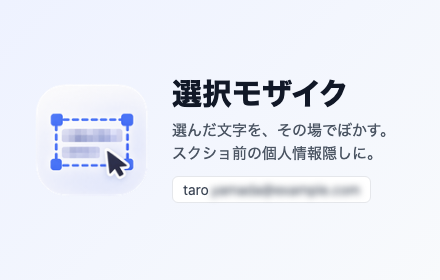

選択モザイク：Chrome ウェブストア入力シート
ダッシュボードの左メニューの順に並べています。「コピー」を押して、同じ名前の欄に貼ってください。画像はこのページから欄へドラッグするか、Finder の ~/Documents/select-mosaic/store/ からドラッグします。
パッケージ
アップロードする zip
~/Documents/select-mosaic/dist/select-mosaic-1.1.0.zip
モザイクの強さのスライダを足した版です。zip は
scripts/build.sh で作るもので、リポジトリには入っていません。ストアの掲載情報：英語（デフォルト）
パッケージのタイトル・概要zip の manifest から自動で入ります。入力は不要です
Select Mosaic Blur text you select, elements you click, or words you save. Hide personal info before you take a screenshot.
説明
Blur anything on a web page before you take a screenshot, share your screen, or go live. • Text mode: select text by dragging, double-clicking, or selecting all, and it gets blurred right away. • Element mode: hover to highlight an element, click to blur it, click again to remove the blur. • Always blur: save words such as your email address, name, or API key. Every match on the page is blurred, including content that loads later. Click a saved word to turn it on or off, or remove it from the list. Add words from the popup or from the right-click menu. • Blur strength: use the slider in the popup to set the blur from 3px to 10px for selected text and saved words. Element blur scales with it. Blur already on the page updates right away, and the setting is kept after you close the browser. Blur applies to the tab where you open the popup or use the right-click menu. Reloading the page removes it. Press Esc or Stop to end a mode. Privacy: no data collection and no network requests. Your saved words and blur strength stay in your browser. The extension does not ask for access to all sites. The source code is on GitHub under the MIT license.
カテゴリプルダウンで選びます
仕事効率化（Productivity） › ツール（Tools）
ダッシュボード上の表記は未確認です。近い名前を選んでください。
ストアの掲載情報：日本語
「編集中の言語」で 日本語 – ja を追加してから入力します。
パッケージのタイトル・概要_locales/ja から自動で入ります
選択モザイク 選んだ文字、クリックした要素、登録した文字にモザイクをかけます。スクリーンショットの前に個人情報を隠せます。
説明
共有したいあなたのための、プライバシー保護ツールです。 AIに「モザイクして」と頼まなくても、隠したい文字を選んだ瞬間にぼけます。スクリーンショット、画面共有、配信の前に使えます。 ・文字モード：ドラッグ、ダブルクリック、全選択で選んだ文字がすぐにぼけます。 ・要素モード：マウスを乗せた要素が枠で囲まれ、クリックするとぼけます。もう一度クリックすると外れます。 ・常にぼかす文字：メールアドレス、名前、APIキーなどを登録すると、ページ内で見つかった場所がすべてぼけます。後から表示された部分にも当たります。一覧の文字を押すとオンとオフが切り替わり、×で消せます。ポップアップか右クリックのメニューから登録できます。 ・モザイクの強さ：ポップアップのスライダで、文字と登録した文字のぼかしを3pxから10pxまで変えられます。要素のぼかしもそれに合わせて強くなります。かけたぼかしにもすぐ反映され、設定はブラウザを閉じても残ります。 ぼかしは、ポップアップか右クリックのメニューを使ったタブにかかります。ページを更新すると消えます。Esc か「停止」でモードを終えます。 プライバシー：データを集めず、通信もしません。登録した文字とモザイクの強さはお使いのブラウザの中だけに残ります。すべてのサイトへのアクセス権限は求めません。ソースコードは MIT ライセンスで GitHub に公開しています。
画像アセット
ショップ アイコン（128×128）全言語
英語：ローカライズ版スクリーンショットと、全言語向けスクリーンショット（1280×800）両方の欄に同じ3枚



ローカライズ版スクリーンショット：日本語編集中の言語を日本語にして入れる



プロモーション タイル（小）440×280全言語は英語版


画像はどれも透明度なしの PNG で、サイズも規定どおりです（sips で確認済み）。マーキー プロモーション タイル（1400×560）とプロモーション動画は任意なので空けておきます。
追加フィールド
ホームページ URL
https://github.com/konaito/select-mosaic
サポート URL
https://github.com/konaito/select-mosaic/issues
公式 URL
空けておく（Search Console での所有権の確認が必要なため）
成人向けコンテンツ
オフ（含まない）
プライバシー
単一用途の説明
Blur text and elements on web pages so users can hide personal information before taking screenshots, sharing their screen, or streaming.
権限が必要な理由
activeTab
Used to inject the blurring script into the current tab only when the user opens the popup or uses the context menu. The extension does not access other tabs.
scripting
Used to run the content script that wraps the text the user selects, the elements the user clicks, or the user's saved words, and applies a CSS blur to them.
storage
Used to save the user's "Always blur" word list, the on/off state of each word, and the blur strength setting locally in chrome.storage.local. Nothing is synced or sent.
contextMenus
Used to add an "Always blur" item to the right-click menu, so the user can add selected text to the word list.
リモートコードを使用していますか？
いいえ、リモートコードを使用していません
データの使用
収集するユーザーデータ
どの項目にもチェックを入れない
ページの文字はブラウザの中でぼかすために読むだけで、保存も送信もしません。端末の外に出さない処理は「収集」に当たらない、という前提で外しています。
開示に関する宣言（3つ）
3つともチェックを入れる
第三者に販売・譲渡しない／単一用途と関係のない目的に使わない／信用力の判断や融資の目的に使わない
プライバシー ポリシーの URL
https://konaito.github.io/select-mosaic/privacy.html
販売地域
すべての地域
アクセス（公開設定）
公開
審査に提出するときに「審査通過後に自動で公開」を選ぶと、通った時点で公開されます。
テスト手順
審査担当者への説明
No account or login is required. Any normal web page works, for example https://en.wikipedia.org/wiki/Email_address 1. Text mode: click the toolbar icon and choose "Blur selected text". Drag over some text on the page. The selected text is blurred. Press Esc to stop. 2. Element mode: open the popup and choose "Blur clicked elements". Hover over the page to see the blue outline, then click a paragraph. It is blurred. Click it again to remove the blur. Press Esc to stop. 3. Always blur: open the popup, type a word that appears on the page (for example "email") and click Add. Every match on the page is blurred. Click the word in the list to turn it off, and click × to remove it. 4. Right-click menu: select a word on the page, right-click, and choose "Always blur ...". The word is added to the list and blurred on the page. 5. Blur strength: open the popup and drag the "Blur strength" slider to 10px. Blur already on the page gets stronger right away. Close and reopen the popup; the slider keeps the value. 6. Reload the page. All blur disappears.